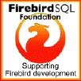

Back to Firebird Project HOME
Firebird 1.5 is a full-featured SQL database engine. It is powerful, yet lightweight, with minimal configuration and
administration needs. It's easily scalable from single-user, single-database usage up to company-wide enterprise
purposes. A single Firebird server can handle multiple independent databases, each with multiple client
connections. And best of all: it's true Open Source, thus free of any license fees even for commercial use.

|
Key Features
|
|
- A.C.I.D. compliance: The concept of "Atomicity,
Consistency, Isolation and Durability" is what Firebird
is built for.
- MGA: A special feature of Firebird is it's "Multi-
Generational Architecture", that allows the engine to
handle various versions of the same physical record at
any time, so any transaction can have it's own version
regardless of other concurrent transactions ("readers
don't block writers and writers don't block
readers"). This ensures OLTP as well as OLAP
operation.
- Stored Procedures: Using Firebird's PSQL
(Procedural SQL), one can easily create powerful
Stored Procedures for processing data entirely on the
server side. A special flavour are "selectable Stored
Procedures" that can calculate data row by row in
the server and can be used like a View or a "virtual
table" from the client side, which is especially useful
for reporting tasks.
- Events: Stored Procedures and Triggers can fire
Events that can be monitored from a client on a
configurable TCP/IP port for "active databases".
- Generators: The concept of Generators (a.k.a.
Sequences) allows the easy implementation of
"AutoInc" columns, but goes far beyond that.
Generators are non-volatile Int64 counters that are
independant of transactions and can be used in many
ways.
- Read-Only databases: For distribution of
databases on e.g. a CD-ROM. Esp. when used in
combination with the Embedded version of the
engine, this gives unbeatable ease of deployment.
|
- Full transaction control: A single client
application can have multiple, concurrent
transactions. The various available isolation levels
can be fully controlled by the client on a per-
transaction basis. The Two-Phase-Commit protocol
allows guaranteed consistency across databases.
Optimistic locking is also supported as well as
multiple Transaction Savepoints.
- Online Backups: There is no need to shut down a
database to back it up. A backup process takes a
snapshot of the state of the database at the moment
it starts, so users can continue working while a backup
runs, allowing 24x7 operation.
- Triggers: Each table can have many separate row-
level triggers that fire Before or After Inserts, Updates
or Deletes. Inside a trigger, the full wealth of PSQL can
be used to apply default values, ensure data integrity,
raise Exceptions etc. New in Firebird 1.5 are
"universal triggers": Here you can have one single
trigger to handle Inserts, Updates and/or Deletes in a
table all at once.
- External Functions: User Defined Function
libraries (UDFs) can be written in languages like C,
C++ or Delphi and can easily be plugged in to the
engine itself via DLLs / SOs, enabling you to extend
the functionality of Firebird "inside" the server.
- Declarative Cascading Referential Integrity:
Ensures consistency and validity of n-level deep
parent-child relationships between tables.
- Character Sets: Firebird implements many
international Character Sets including Unicode with a
variety of collations.
|
|
|
|
|
SQL Standard Compliance
|
Firebird has full SQL 92 Entry Level 1 Support and
implements most of the SQL-99 standard, plus some
very useful additions. This includes DML/DDL
statements, FULL/LEFT/RIGHT [OUTER] JOIN syntax,
UNION, DISTINCT clauses, subselects (IN, EXISTS),
internal functions (AVG, SUM, MIN, MAX, COALESCE,
CASE, ..), constraints (PRIMARY KEY, UNIQUE,
FOREIGN KEY), as well as all common SQL data types.
Firebird also implements Domain and Field level Check
Constraints, Views, Exceptions, Roles and a fine-
grained Grant management. See the Release Notes
and the Firebird Reference Guide for more details.
|
|
Hardware Requirements
|
Firebird runs on almost any hardware. Even "small"
hardware can do the job, esp. when used with Linux.
As with any RDBMS, there are the usual aspects that
influence performance: the amount of physical RAM
(as little as 16MB will do for a start); the speed of the
storage subsystem (like RAID systems) etc. Of course,
the recommended hardware depends on what you
want to do with the database, e.g. how large will it
become, how many concurrent users do you expect
andsoforth. You can start off with a minimal
configuration and then power up the server later on as
the need arises.
|
|
Available OS Platforms
|
The most commonly used OS platforms for Firebird
are Linux and Windows (incl. MS Terminal Servers and Citrix Mainframes).
Other supported platforms are
Mac OS X, Solaris and HP-UX.
Migration from one
platform to another is painless and possible at any
time: just backup a database on one OS using the
Transportable Format, then restore it on any other.
|
|
Connectivity
|
Firebird supports a number of connectivity methods,
including: native Component Packages for C/C++
and Delphi, ODBC, JDBC (JayBird), PHP Driver,
OLEDB driver, dbExpress, .Net data provider and
finally through direct API calls using fbclient.dll/.so.
|
|
Physical Limits
|
Firebird allows really huge databases. Databases can
span multiple files, the size of each file is OS-
dependant. The theoretical limit is currently 64TB for
a single-file database, so the practical limit is usually
the operating / file system or available HD space.
|
|
|
Server engine versions
|
There are three different versions of the engine, all
interchangeable and each with its own strengths:
- Classic Server (one instance per client connection;
SMP/HT support)
- SuperServer (all connections handled by one
module; currently no SMP/HT support)
- Embedded Version (the entire engine in a single
DLL / SO (!) for single-user, single-database use)
All versions use the same db file format, so you can
switch between all of them any time you like.
|
|
Licensing
|
Firebird is licensed under the IPL (InterBase Public
License) which has the same terms as the Mozilla
Public License 1.1. Firebird is completely free to
use and deploy to your customers. You don't need to
release the source code for your own product,
regardless of your licensing model. If you modify the
engine, however, you must provide public access to
the source code of your modifications.
|
|
Tools
|
A large amount of tools is available for Firebird, some
free, some commercial. There are admin tools, tools
for developers, UDF libraries, Connectivity tools and
more (see the links section below).
|
|
Support and Resources
|
On www.firebirdsql.org, the home of Firebird,
there are many useful links about the project.
The company IBPhoenix offers various contracts for
professional support by people with long-term
experience. On their website
there is also a wealth of tech infos, how-tos and in-
depth documentation available.
|
|
Community
|
There is an ever growing community of Firebird users
and various newsgroups to supply instant online
support. On the project homepage there is a full list of
all newsgroups about Firebird (see below).
|
|
History
|
Firebird is based on the source code of InterBase 6.0
that was released as Open Source by Borland in
August 2000. The story of InterBase goes back as
far as 1984, so in total there are close to 20 years of
relational database experience in the product.
|
|
|
|
|
Firebird Links
|
Download: Click here to find a Firebird package and DOWNLOAD.
Documentation: Detailed documentation links
Licence: The complete IPL
Tools and Admin programs: See links on the community contributions pages
Community: A collection of newsgroups and email forums
|
|

|
One driving force behind the Firebird project is the FirebirdSQL Foundation. This
is an open group of individuals and companies sponsoring the development of
Firebird by means of collecting funds and giving grants to developers to help evolve
and continue the project.
The Foundation gladly accepts new members, either
corporate or private, as well as sponsors for the funding of the project.
Join the Foundation on http://www.firebirdsql.org/foundation/
|
|
|
© 2003 by The Firebird Project. All names of products and companies mentioned herein are trademarks of their respective owners.
Back to Firebird Project HOME
|
|